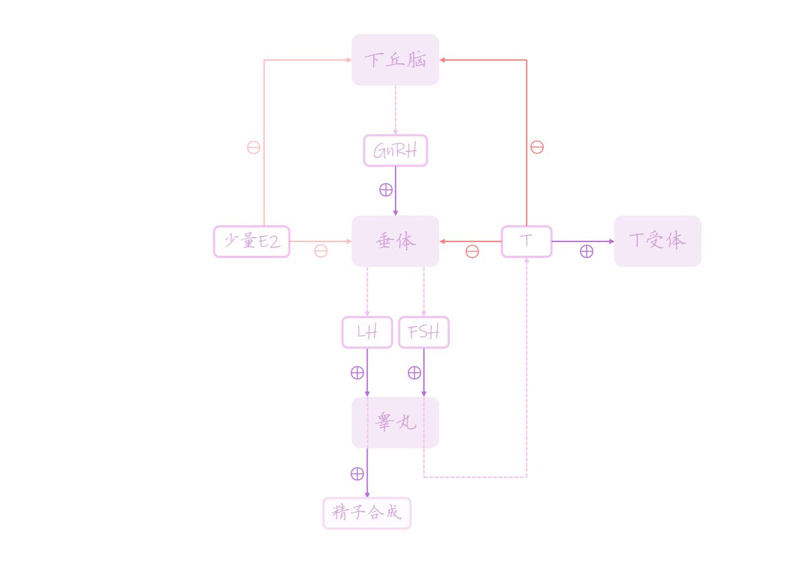
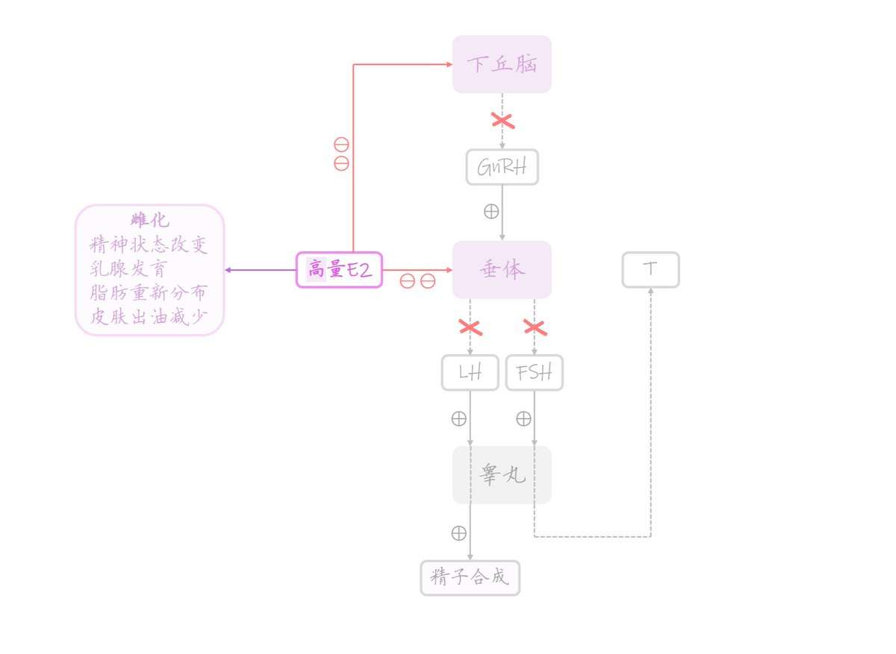
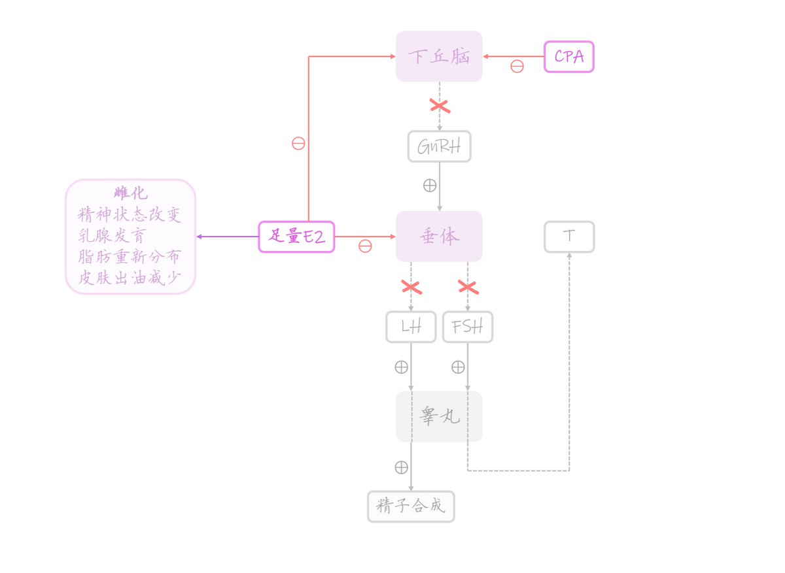
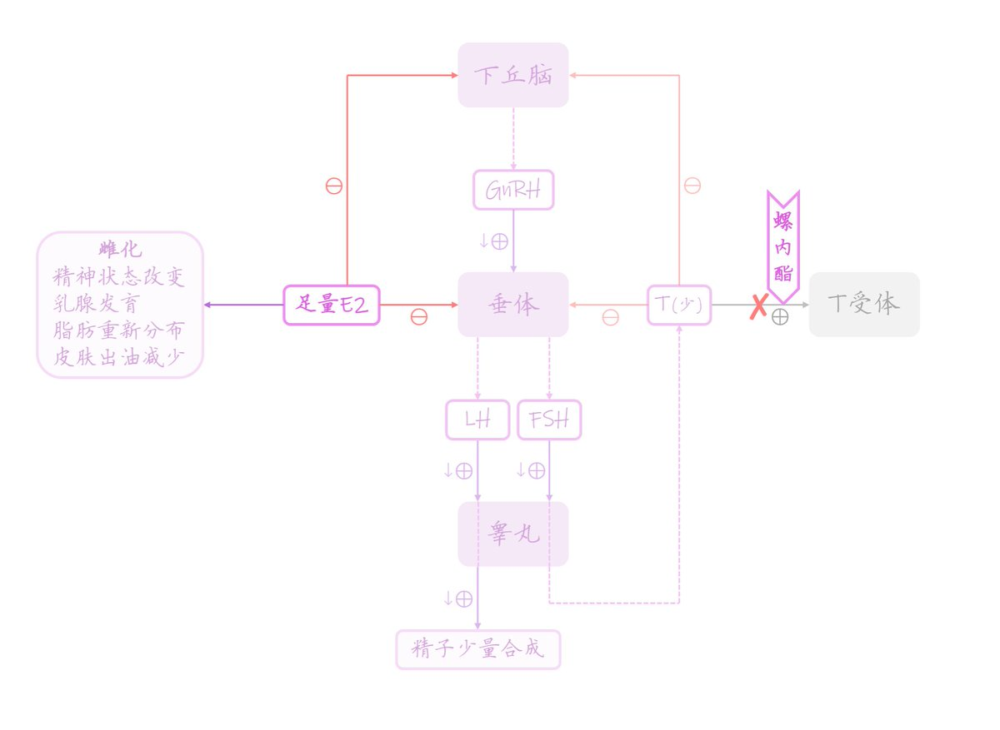

時璃風医詩🌈🏳️🌈
@hagishigure
都是错误的🙀。因为每一张都少了中枢神经的简要🙀。
其次，雌二醇会代谢成为雌酮，雌酮才是产生女性化效应的主要动力，雌酮的速率比雌二醇吸收率重要。这点也缺少了。🙀
再其次不是T受体，那是AR受体，请不要和巨噬细胞和T-cell产生混淆。🙀
再再其次你没有画出性别焦虑的分子基础和hrt之间的影响。🙀




𝐻𝑖𝑖𝑚𝑒🍡🍥
@Hiime0
🏳️⚧️ HRT基本原理图示 🍥
图一：HRT前的HPG轴性激素调节
图二：日雌的单药治疗
图三：E2结合CPA的抗雄治疗
图四：E2结合螺内酯的受体拮抗治疗
如有不严谨之处欢迎指正
如对您有帮助可以帮忙转帖一下喵
话说大家觉得哪种方案最好 https://t.co/AfWpP3e7B3